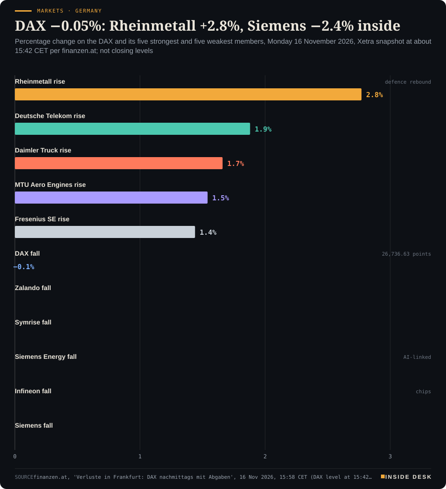
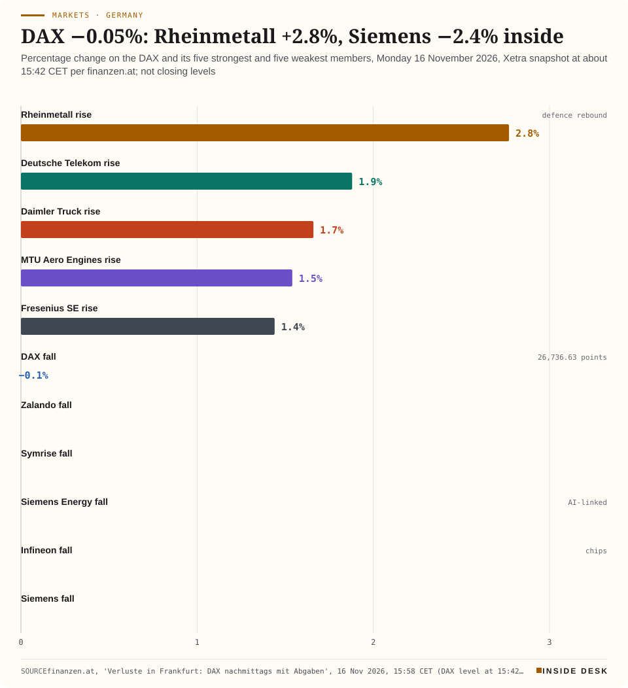
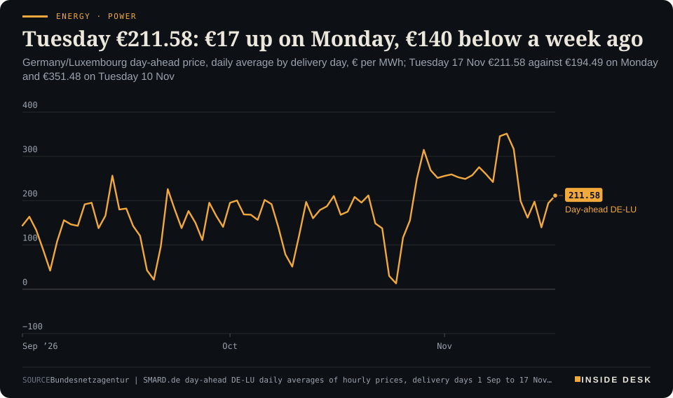
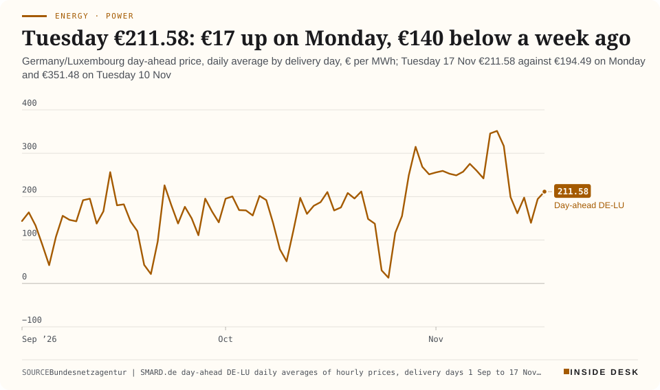

Inside Desk ePaper, Evening ePaper · Mon 16 Nov 2026
Monday, 16 November 2026Always free
Inside Desk
Evening ePaperPublished 17:31 CET · Berlin
Lead · Markets & Macro
The DAX barely moved on Monday while defence rose and chips fell. The ECB's vice-president chose the same morning to describe how an AI repricing would travel through your fund.
The DAX barely moved, the EU answered Moscow with listings rather than speeches, and two regulators cleared UniCredit for Commerzbank on the same day. The ECB's vice-president used the morning to describe how an AI repricing would travel.
The EU answered Moscow with 113 new listings, Brussels and Washington both cleared UniCredit for Commerzbank, and the DAX barely moved while chips slipped ahead of Nvidia's results; on Monday the paperwork did more than the podiums.
Geo-economics · p. 5
Energy & Industry · p. 9
Climate & Weather · p. 16
The day in one sentenceThe EU answered Moscow with 113 new listings, Brussels and Washington both cleared UniCredit for Commerzbank, and the DAX barely moved while chips slipped ahead of Nvidia's results; on Monday the paperwork did more than the podiums.
ContentsInside Desk · Evening ePaper16 November 2026
The DAX barely moved, the EU answered Moscow with listings rather than speeches, and two regulators cleared UniCredit for Commerzbank on the same day. The ECB's vice-president used the morning to describe how an AI repricing would travel.
11 edition pieces · 11 desks · Published 17:31 CET, 16 November 2026
22 ePaper extras, added , 16 November. They appear only in the ePaper and carry their own time.
17:30 Evening ePaper, updated live until 22:30 with an “Updated” time and a Latest page
Sun 10:00 The Sunday Magazine
Berlin time. Every issue is free.
How to read it
Swipe, use the arrow keys or the page strip. Tap any headline for the reading view. Press / to search, t for contents, +/− to zoom. Download the PDF.
LatestInside Desk · Evening ePaper16 November 2026
Latest
Live: this page and the issue are updated until 22:30 Berlin time.
Evening ePaper published. No updates yet.
LeadInside Desk · Evening ePaper16 November 2026
Markets & Macro · Lead · 3 min
The DAX barely moved on Monday while defence rose and chips fell. The ECB's vice-president chose the same morning to describe how an AI repricing would travel through your fund.
Monday’s headline number in Frankfurt was nearly nothing. At 15:42 CET the DAX stood at 26,736.63 points, down 0.05% from Friday’s 26,749.95, after opening at 26,772.11 and trading between 26,693.84 and 26,797.191. Nothing happened, you might say. Underneath, a good deal did.
Markets · GermanyDAX −0.05%: Rheinmetall +2.8%, Siemens −2.4% insidePercentage change on the DAX and its five strongest and five weakest members, Monday 16 November 2026, Xetra snapshot at about 15:42 CET per finanzen.at; not closing levels


Bar chart of Monday 16 November 2026 percentage changes in the DAX at about 15:42 CET, per finanzen.at: Rheinmetall up 2.77 percent, Deutsche Telekom up 1.88, Daimler Truck up 1.66, MTU Aero Engines up 1.54, Fresenius up 1.44, the DAX down 0.05, Zalando down 1.16, Symrise down 1.23, Siemens Energy down 1.51, Infineon down 1.84 and Siemens down 2.38 percent. These are intraday snapshot figures, not closes.
Source: finanzen.at, 'Verluste in Frankfurt: DAX nachmittags mit Abgaben', 16 Nov 2026, 15:58 CET (DAX level at 15:42 CET via Xetra); intraday snapshot, not closing levels; retrieved 16 Nov 2026 · reported figures · CSV
The shopping list. Look inside the index and Monday was a rotation, not a rest. Rheinmetall was the strongest DAX member, up 2.77% at €786.70, followed by Deutsche Telekom (+1.88%), Daimler Truck (+1.66%), MTU Aero Engines (+1.54%) and Fresenius (+1.44%)1. At the other end sat Siemens (−2.38%), Infineon (−1.84%) and Siemens Energy (−1.51%)1. Reuters put the pattern plainly: European shares were “buoyed by defence and consumer-focused sectors, while technology stocks underperformed”2.
The broader picture was the same flat surface. The pan-European STOXX 600 was up 0.1% at 664.97 points at 10:36 CET, near its record, and Reuters reported that Morgan Stanley had upgraded European equities to overweight2. Investors, it said, have come to see the region as “a haven from AI volatility”2. London’s FTSE 100 was up 0.3% at 10,939.35 at midday3.
The warning in the same building. The more interesting text of the day came from the podium, and it was not a cheerful one. Opening Euro Finance Week in Frankfurt at 09:30 CET, ECB Vice-President Boris Vujčić said two risks “stand out very prominently compared to the situation a year ago”: artificial intelligence and sovereign debt4. “A reassessment of the AI narrative may trigger an abrupt repricing in markets and significant valuation losses,” he said, adding that this could lead to “a surge in investment fund redemptions” and forced asset sales4. He noted that cumulative capital expenditure by major US technology firms is projected to reach $5.5 trillion by 2030, and that cloud and AI providers are borrowing at record volumes.
A central banker warning about valuations is not a forecast, and the ECB does not set share prices. But it is useful to read that speech next to the chart. The market that Vujčić described is the one that sold Siemens Energy and Infineon on Monday morning and bought tanks and telephone lines1,2. …
Geo-economicsInside Desk · Evening ePaper16 November 2026
Geo-economics · 2 min
The Commission cleared UniCredit's takeover without conditions and warned Berlin not to interfere. The rest is paperwork, which is exactly where the fight now moves.
The European Commission on Monday cleared UniCredit’s takeover of Commerzbank under EU competition rules, without conditions, opening the way for the Italian lender to take control of Germany’s second-largest bank1. The Federal Reserve’s Board of Governors had approved earlier the same day, and UniCredit says one final regulatory approval is outstanding, expected by the end of November2.
What made the day unusual was not the verdict but the tone. Executive Vice-President Teresa Ribera called a press conference to announce it, and said that if a national government sought to prevent the takeover, “we would react accordingly”1. “This is the biggest cross-border banking deal we have had since the financial crisis,” she said1. And, more plainly: “Europe needs stronger banks that can compete, grow and support our businesses and families”3.
The competition finding itself was dull, which is the point. The Commission saw a moderate joint market share in Germany and several credible rivals1. POLITICO noted that the two banks’ combined market value would be only around a fifth of JPMorgan’s1. A European champion, measured honestly, is still a mid-sized bank by American standards.
The politics are not finished. The German government still holds 13% of Commerzbank, a legacy of its 2009 rescue, and is asking for guarantees on jobs, the Frankfurt headquarters and the right to appoint two supervisory-board members, demands that chief executive Andrea Orcel has resisted1. EU rules strictly limit the grounds on which governments can intervene in mergers1.
For you: if you bank with Commerzbank, Monday’s decision is about who may own the bank, not about your account. What changes is who owns the balance sheet behind them, and that is decided by approvals, not speeches. Markets shrugged: UniCredit was down 0.6% in Milan at midday and Commerzbank 0.4% in Frankfurt3. Nothing here is investment advice.
Geo-economics · Short item · ePaper extra, added
Eurostat's first estimate shows a small rebound and a longer slide. Germany did better than the average; Ireland did much worse.
Euro-area industrial production rose 0.2% in September from August, seasonally adjusted, after a 0.5% fall in August, Eurostat said on Monday in its first estimate1. Across the whole EU, output rose 0.5%1. Against September 2025, however, euro-area production was down 1.5%, and EU production 0.8%1.
The split by goods tells you where the slack sits. On the month, intermediate goods rose 0.7% and durable consumer goods 1.3%, while energy fell 1.7% and capital goods were flat1. …
Geo-economics · Brief · ePaper extra, added
Amid Monday’s AI warnings, ECB Vice-President Boris Vujčić made a quieter point about who holds Europe’s government bonds. “Large Japanese investors may further reduce euro area government bond holdings if Japanese yields rise,” he said in Frankfurt1. Hedge funds, meanwhile, have become “a significant but procyclical source of liquidity”1.
He also asked whether heavy AI-related borrowing could compete with governments for capital, “including whether AI-related debt issuance could put upward pressure on financing costs or crowd out other investment”1.
The geoeconomics here are plain. A budget is financed by buyers, not by votes, and the buyer base is becoming more price-sensitive, in his words1. When a finance minister promises a measure, the bond market’s question is who in Tokyo, London or a hedge fund will lend for it, and at what rate.
Markets & MacroInside Desk · Evening ePaper16 November 2026
Markets & Macro · Short item · ePaper extra, added
Europe's arms makers led Monday's sector table after a bruising month. The question underneath is not orders but invoices.
Aerospace and defence was Europe’s best sector on Monday morning, up 1.3%, as Rheinmetall, Renk and CSG tried to recover from sharp losses earlier in the month, Reuters reported1. By midday Rheinmetall was up 4.6%, Thales 2.6% in Paris and Leonardo 2.7% in Milan; in London BAE Systems and Babcock both gained 2.2%2. AJ Bell tied the move to a Morningstar report suggesting recent volatility had made valuations in the sector more attractive2. By 15:42 CET Rheinmetall’s gain had narrowed to 2.77%, at €786.70, still the best in the DAX3.
The reason the sector needed a second look is worth reading slowly. Reuters noted that defence has lagged this year on concerns that contractors “are struggling to convert orders into strong revenue and cash generation”, even as governments are expected to spend more on equipment1. That is the dull machinery at work: a budget line is not an order, an order is not a delivery, and a delivery is not cash until the invoice is paid.
One fund manager was openly keen. “We have some very interesting investments in that we’re pretty excited about,” said James Rasteh of Coast Capital1. Enthusiasm from a holder is information about the holder.
For you: if you hold defence shares, the number to watch is not the next procurement headline but the next cash-flow statement. Nothing here is investment advice.
Markets & Macro · Brief · ePaper extra, added
Novo Nordisk rose 3.2% on Monday morning after the drugmaker said its CagriSema drug showed 25.4% weight loss among early responders, Reuters reported1. Healthcare was among the sectors that have underperformed this year and led on Monday, alongside luxury and personal and household goods1.
Note the qualifier. “Early responders” are a subset of patients, not the whole trial, and a share price reacts to a headline before the full data are read. The same morning, chip-related Aixtron fell 1.4% and Technoprobe 3.7%1. Monday’s market preferred the medicine cabinet to the server room. Nothing here is investment advice.
Politics & InstitutionsInside Desk · Evening ePaper16 November 2026
Politics & Institutions · 2 min
EU foreign ministers met in Brussels on Monday. Kaja Kallas called Russia's terms a pretext; the ministers replied with sanctions lists, a payment and a date for a shadow-fleet conference.
Moscow arrived at this week with a list of demands, including a new security framework for Europe that Europeans read as an attempt to make NATO pull troops and equipment back westward1. Brussels answered on Monday with a list of its own. “In 2021, Russia’s demands were a pretext for war. In 2026, they are pretext to keep the war going,” the EU’s foreign policy chief Kaja Kallas wrote before the meeting of foreign ministers1. “A ceasefire must come first,” she added1.
The answer came mostly as paperwork. Ireland’s foreign minister Helen McEntee, whose country holds the EU presidency, said the bloc would agree 113 new listings against Russia on Monday, ahead of further talks this week on a broader 22nd sanctions package2. The measures target nearly 50 Russian banks and financial institutions, several businesspeople linked to the energy sector and the oil and petroleum trade, and dozens accused of spreading pro-Russian propaganda, who face travel bans and asset freezes1. France’s foreign minister said Tatyana Kim, chief executive of the online retailer Wildberries, was among them2.
Money moved too. Kyiv received $1.88bn from the European Commission on Monday to buy drones, ammunition and air defence, part of a larger loan approved in February, and the EU approved its largest-ever single payment under the Ukraine Facility, nearly €8 billion, Volodymyr Zelensky said1. France’s Jean-Noël Barrot announced a conference in Paris on 4 December on the Russian “shadow fleet”, the ageing tankers that keep crude exports moving around sanctions2.
The words were sharp as well. “It is not for others to dictate to Europeans the terms of their own security,” Barrot said, promising to defend Europe’s security principles “tooth and nail and inch by inch”2. Sweden’s Maria Malmer Stenergard called the emerging Russian demands “absurd”2.
Politics & Institutions · Short item · ePaper extra, added
For the first time as chancellor, Friedrich Merz sat in on the CSU board in Munich. Markus Söder offered backing, and drew a line under the mothers' pension the day before the coalition committee.
Friedrich Merz spent Monday morning in Munich, the first time he has attended a CSU board meeting as chancellor1. Markus Söder called it “not only a pleasure, also an honour”, handed over a Bavarian bread board and promised “backing for Berlin”1. …
Hundreds of thousands gathered on Prague’s Letná Plain on Sunday, in what police confirmed was the largest protest since the independent Czech Republic was established in 19931. Organisers, Million Moments for Democracy, estimated between 350,000 and 450,000 people1.
The core grievance is a funding line. The government plans to replace licence fees for public service media with money from the state budget, which protesters fear would cost those broadcasters their independence1. Speakers included students and signatories of Charter 77; the demonstration ended peacefully at around 16:45, with no incidents reported by police1.
For you: independence is rarely abolished. It is usually re-routed through a budget line that has to be renegotiated every year. That is why people stood in the cold for a fee.
Psychology & BehaviourInside Desk · Evening ePaper16 November 2026
Psychology & Behaviour · 2 min
Irregular bedtimes go with worse depression, anxiety and loneliness, says a new paper. Its methods section says when the data were gathered, and who paid.
The Annex reads the paper behind the headline. The headline, reaching German readers overnight, says people who go to bed and get up at irregular times more often report depression, anxiety and loneliness2. The paper, published in Scientific Reports on 12 November, says that too, and a good deal more about its own limits1.
Clause one: the sample. The team analysed 22,894 adults in the TemPredict study who wore an Oura Ring, a commercial sleep tracker, and answered monthly mental-health surveys1. Participants contributed an average of 153.8 days of usable data1. Shift workers were excluded1. And the date matters: the wearable data run from January to October 2020, the first pandemic year1.
Clause two: the measure. The Sleep Regularity Index asks how likely you are to be in the same state, asleep or awake, at the same clock time 24 hours apart; it runs from 0 to 100, and higher is more regular1. It says nothing about how long you sleep1.
Clause three: the result. The gradient is consistent. Participants with severe depressive symptoms averaged 74.93, against 83.74 for those within normal limits; severe anxiety 78.94 against 83.67; elevated loneliness 81.79 against 83.751. Desk arithmetic: nearly nine points for severe depression, under two for loneliness. The associations held after adjusting for age, sex and average sleep duration1.
Clause four: the small print. The analysis is cross-sectional, so it cannot say whether irregular sleep worsens mood, mood disrupts sleep, or both1. The cohort was mostly White, middle-aged adults from North America and Europe1. Chronotype, living alone and relationship status were not accounted for1. The work was partly funded by Oura Health, and two of the authors have received consulting fees from Ouraring Inc.; one also has a financial interest in it1. None of that makes the finding wrong. It makes it a finding to replicate.
For you. The authors’ own clinical point is modest and old: keep a consistent wake time and protect a regular bedtime1. That advice was sound before the ring existed. …
Psychology & Behaviour · Short item · ePaper extra, added
Bodies that fall into rhythm are supposed to cooperate. In an unequal trust game, they returned less.
Synchrony is meant to be the warm thing: two people’s heart rates or sweat responses rising and falling together, and, says much earlier research, more cooperation as a result1. A study in Proceedings of the Royal Society B, written up by PsyPost on Sunday, found the opposite in one setting1.
Researchers at Leiden paired 122 young adults into same-sex pairs of strangers; 59 pairs were analysed1. …
In a six-week randomised trial of 126 unemployed US adults with elevated depressive symptoms, 68.3% of those given the DRIVEN app found work, against 50.8% of a control group sent weekly emails with job-search links, Northwestern University reported last week1. Desk arithmetic: 17.5 percentage points. The app paired self-guided exercises based on behavioural activation with job tips and three video sessions with a coach; participants also reported better mood and fewer depressive symptoms1. The study appeared in the Journal of Medical Internet Research1.
The method is deliberately small: find “the corner pieces”, tasks you can finish in 15 minutes, says senior author Stewart Shankman1. The sample is small too, and the follow-up short.
For you: motivation often follows action, not the other way round.
Energy & IndustryInside Desk · Evening ePaper16 November 2026
Energy & Industry · 2 min
Tuesday's power cleared €17 above Monday and €140 below last Tuesday's record. The more useful news is in the hours: the expensive one now comes at eight in the morning, not six in the evening.
Monday’s auction has priced Tuesday. Electricity for delivery in Germany and Luxembourg on 17 November will average €211.58 per megawatt hour1. Desk arithmetic: that is €17.09 more than Monday’s €194.49, and €139.90, or about 40%, less than Tuesday 10 November, when €351.48 set the record of the autumn1.
Energy · PowerTuesday €211.58: €17 up on Monday, €140 below a week agoGermany/Luxembourg day-ahead price, daily average by delivery day, € per MWh; Tuesday 17 Nov €211.58 against €194.49 on Monday and €351.48 on Tuesday 10 Nov


Line chart of the daily average German-Luxembourg day-ahead electricity price from 1 September to 17 November 2026, in euros per megawatt hour. The previous week runs from €345.64 on Monday 9 November and a record €351.48 on Tuesday 10 November down to €139.70 on Sunday 15 November, then €194.49 on Monday 16 November. The latest value is €211.58 for delivery on Tuesday 17 November, €17.09 above Monday and €139.90 below the previous Tuesday.
Source: Bundesnetzagentur | SMARD.de day-ahead DE-LU daily averages of hourly prices, delivery days 1 Sep to 17 Nov 2026 (Tuesday 17 Nov €211.58, auction of 16 Nov), retrieved 16 Nov 2026, 16:36 CET · CC BY 4.0 · CSV
An ordinary number, for once. The industry association BDEW puts the average day-ahead price of the past 30 days at €213.62. Desk arithmetic: Tuesday sits about two euros below that. After a week that ran from €351 down to €140, a day that simply lands on its own monthly average is the market behaving like an institution rather than a headline.
The hours have moved. This morning’s edition pointed you to Monday’s dearest hour, 18:00 to 19:00, at €268.291. …
Energy & Industry · Short item · ePaper extra, added
Germany's storage is being drawn down, the newest LNG terminal is feeding in, and today's gas still costs more than next year's.
Germany’s gas storage was 57.3% full on Saturday 14 November, according to the industry association BDEW’s Monday update1. That is 0.8 percentage points lower than on 10 November, and BDEW reports that the stores are now being drawn down rather than filled1. …
Energy & Industry · Brief · ePaper extra, added
The front-month TTF contract, Europe’s gas benchmark, fell 0.5% to €90.50 per megawatt hour in early European trading on Monday, Investing.com reports1. Britain’s NBP moved in step, down 0.5% to 225.90 pence a therm1.
It did so on a bad weekend for the Gulf: another merchant tanker caught fire in the Strait of Hormuz, and Tehran reportedly attacked a US base in Bahrain1. Investing.com’s reading is that traders are weighing the physical volume of supply at sea more heavily than the risk of outages1. It also cites the 90-day extension of a Jones Act waiver by President Trump, which lets foreign-flagged ships keep carrying oil between US ports1.
For you: a calm price on a violent weekend is not complacency; it is inventory speaking. Nothing here is investment advice.
Money, FX & CommitteesInside Desk · Evening ePaper16 November 2026
Money, FX & Committees · Podium vs Print · 2 min
The ECB's vice-president described how an AI sell-off would run through investment funds. Six hours later Wall Street printed a fall that was real, and orderly.
Podium
“A reassessment of the AI narrative may trigger an abrupt repricing in markets and significant valuation losses.”
Boris Vujčić, Vice-President of the European Central Bank, opening Euro Finance Week in Frankfurt, Monday 16 November 2026, 09:30 CET
Print−1.13%
The Nasdaq Composite dropped 282.9 points or 1.13 per cent to 24,853.35; the S&P 500 fell 0.63 per cent and the Dow 0.15 per cent.
Reuters opening report, via The Business Times, New York open, Monday 16 November 2026, 15:30 CET
The podium. Opening Euro Finance Week on Monday morning, ECB Vice-President Boris Vujčić said the risk of a market repricing “rather than abating, has further increased” since a year ago1. His central sentence: “A reassessment of the AI narrative may trigger an abrupt repricing in markets and significant valuation losses”1. He then spelled out the route. Euro-area investment funds have “significantly increased their exposures to AI”, so a repricing “could lead to a surge in investment fund redemptions, increasing the risk of forced asset sales”1.
The print. Six hours later, at the New York open, the Nasdaq Composite fell 282.9 points, or 1.13%, to 24,853.35; the S&P 500 lost 0.63% and the Dow 0.15%2. A little later CNBC TV18 had the Nasdaq down 1.4%, with Micron off 6%, Intel 5% and AMD 4%, ahead of Nvidia’s results after Tuesday’s close3.
The gap. On the surface, wide: “abrupt” and “significant” against a 1% opening dip. But Vujčić was not forecasting Monday. He was describing a mechanism, and the print shows only that the first part of it, the reassessment, is being priced in instalments rather than all at once1,2. The second part, redemptions turning into forced sales, does not show up in an index at all. It shows up in the liquidity terms of the funds you hold. His own prescription is dull and precise: funds should better align “redemption terms with the liquidity of underlying assets”1.
For you. Find the fund factsheet for your largest holding and check two lines: how much of it sits in AI-linked names, and how quickly you can redeem. Neither is a reason to sell tonight. Both are reasons to know before Wednesday’s Financial Stability Review4. Nothing here is investment advice.
Money, FX & Committees · Short item · ePaper extra, added
Legal & General's shares fell on a volume figure barely below last year's. Behind it sits the quiet business of buying out company pensions.
Legal & General fell 2.2% on Monday, among the weakest shares in London’s FTSE 100, after its pension risk transfer volumes disappointed1. Reuters had the British insurer down 2% in the morning on volumes that “fell short of estimates”2.
The figure itself is modest. L&G reported £5.8 billion of pension risk transfer transactions in the nine months to 30 September, against £5.9 billion a year earlier; including deals secured since the end of the period, the total rose to £6.7 billion1. The insurer also said growth in core operating earnings per share was expected to exceed the upper end of its 6% to 9% target range for 20261.
Pension risk transfer is the dull machinery worth knowing about. A company that runs a defined-benefit pension scheme pays an insurer to take over the promise, and the insurer then pays the pensions. For the employees, the cheque keeps coming; what changes is who stands behind it.
Desk arithmetic: £5.8 billion against £5.9 billion is a fall of under 2% in volumes, and the share price fell by a similar margin. The market was not punishing a collapse. It was marking down an expectation.
For you: if your workplace pension has been, or may be, bought out by an insurer, the question to ask is not the share price of that insurer but the terms of the policy that replaced your scheme. Nothing here is investment advice.
Money, FX & CommitteesInside Desk · Evening ePaper16 November 2026
Money, FX & Committees · Brief · ePaper extra, added
Asos jumped 6.3% on Monday after the online fashion retailer bought back £90 million of its £253 million in outstanding 11% convertible bonds due in 2028, AJ Bell reported1.
Desk arithmetic: 11% on £90 million is about £9.9 million a year in interest no longer owed on that slice, before the cost of the buyback itself; on the full £253 million the annual coupon would be about £27.8 million. Roughly £163 million of the bonds remain outstanding.
The lesson travels well beyond fashion. When borrowing costs 11%, paying it down is a return that needs no forecast. The same arithmetic applies to an overdraft or a credit-card balance at home. Nothing here is investment advice.
Ordinary & Inherited LifeInside Desk · Evening ePaper16 November 2026
Ordinary & Inherited Life · 2 min
A heating bill you cannot shop around for needs someone checking it. Lower Saxony's consumer advocates say nobody independent does.
The ledger’s entry tonight is a line most tenants never read: the fixed charge on a district-heating bill. Enercity, Hannover’s municipal utility, has announced changes to its district-heating prices, and on Monday the Verbraucherzentrale Niedersachsen, the state’s consumer advice centre, put numbers on them1.
By its calculation, the higher fixed costs in the base price can add up to €2,150 a year for a detached house1. In blocks of flats it finds increases of about €200 to €530 per flat per year1. Hardest hit are households with a high heat demand, for example in unrenovated buildings with a correspondingly large connected load1. Which cost factors drive the rise, and how much of it is the real cost of expanding the network, remains unclear, the advocates say1.
The monopoly line. “District-heating customers in the Hannover area cannot simply switch supplier or move to another heating system because of enercity’s monopoly position,” says René Zietlow-Zahl, the centre’s energy-law expert1. That is why, he argues, price rises should be systematically checked by someone independent1. It is not an argument against district heating. He calls affordable, traceable prices important for its acceptance and for the success of the heating transition1.
The discount with a string attached. Enercity’s pricing includes a 15.09% discount, calculated by comparing district-heating costs with a gas heating in basic supply; if district heat is dearer, the discount partly closes the gap1. It softens this rise considerably1. But the advocates point to the mechanism: if gas prices rise, the gap narrows, the discount shrinks, and district-heating increases could be amplified1.
For you. The one lever a customer holds is the connected load, the capacity in your contract, which now carries a larger share of the cost1. The centre suggests checking whether it matches your real need; a heat-load calculation can show whether it can be reduced1. …
Ordinary & Inherited Life · Short item · ePaper extra, added
Shoppers plan to spend about €328 each. The law already gives you the tool to check whether the bargain is one.
The average Black Friday budget this year is around €328, according to a survey by the price-comparison site Idealo cited by SWR on Monday1. Three in four respondents plan to shop on the day, and about one in five now uses an AI chatbot to hunt for bargains1.
Consumer advocates are relaxed about the chatbots. …
Ordinary & Inherited Life · Brief · ePaper extra, added
“The currently higher prices for fossil fuels will make this problem worse again next year,” says Joshua Jahn, energy expert at the Verbraucherzentrale Brandenburg1. For tenants, his centre notes, the effect often arrives with a delay: when the service-charge statement comes and a back payment is due, which can hit low-income households hard1.
Its advice is unglamorous and right. Use the current Heizspiegel, the heating-cost benchmark, to see what heating typically costs for your flat size and system, and compare the statement with last year’s1. The centre runs free online talks on reading the statement, on 16 November and 2 December, and offers energy advice by appointment1. For legal advice, it points tenants to a local tenants’ association or a specialist lawyer1.
For you: the statement is a document, not a verdict. Check it.
Tech & ComputeInside Desk · Evening ePaper16 November 2026
Tech & Compute · 2 min
The US and nine partners signed the San Francisco Declaration on Sunday. Its most useful part is not the rhetoric about China but a page of definitions.
On Sunday the United States and nine partners in its Pax Silica initiative signed the San Francisco Declaration: Australia, India, Israel, Japan, South Korea, Qatar, Singapore, the United Arab Emirates and the United Kingdom1. Pax Silica was announced by Washington in December last year to secure supply chains for silicon and the minerals behind semiconductors and, by extension, AI2. The Hindu frames the signing as part of growing competition with China2.
Read the text and the rhetoric is thin; the definitions are the substance. “Sensitive technologies” are goods, software, materials, knowledge, components and their means of production in AI supply chains whose theft or acquisition by hostile actors “would confer a meaningful military or intelligence advantage, or undue economic leverage”1. “Critical infrastructure” explicitly covers ports, terminals, transport, communications and logistics networks, the ICT and energy systems they run on, and the digital platforms that coordinate them1. That is a very wide net, wide enough to include the software that books a container.
The machinery comes next. The declaration resolves to set up five working groups: pro-innovation policy frameworks, adoption in key sectors, supply-chain cooperation across the stack, “safe harbors and supply chain security hubs”, and security and resilience1. There is one telling footnote. The text speaks throughout of “Super Intelligence”, and notes that “for some participants” this simply means artificial intelligence1; the US government uses the term after an executive order renamed AI2.
For you: a declaration commits nobody to spend a cent. But a shared definition of what counts as critical is where export controls, investment screening and procurement rules later come from. …
Tech & Compute · Short item · ePaper extra, added
United Launch Alliance lost a rocket outright for the first time since 2006. Amazon's internet constellation now waits on two investigations.
United Launch Alliance’s Vulcan rocket suffered “an anomaly 10 minutes into the flight” on Sunday and failed to put 40 Amazon Leo internet satellites into orbit, the company said1. It was the first outright failure of a ULA rocket since the Boeing–Lockheed Martin venture was formed in 2006, and only the fifth Vulcan flight, the first in nine months1. The cause is not yet known; Spaceflight Now noted that the first stage’s BE-4 engines appeared to burn longer than the pre-launch timeline, and that something went wrong during the Centaur upper-stage firing1.
The cost is measured in queue time. Sunday was the first of 38 Vulcan flights Amazon has bought for Leo1. …
Tech & Compute · Brief · ePaper extra, added
Scott Bessent called on Sunday for a “dramatic shakeup” at Nvidia and said its board should look outside the company for its next chief executive1. “If this were a bank and they hadn’t complied like this, the OCC would be in there right now, and a lot of the executives would be removed,” the Treasury Secretary told Fox News1.
The sharper point concerned a line in the accounts. Bessent pointed to a surge in reported Singapore revenue as China sales fell; Nvidia stopped reporting Singapore revenue separately in November 2025, saying a method based on customers’ headquarters rather than billing addresses better reflected where its sales went1. Nvidia, now led by interim chief executive Colette Kress, reports quarterly results on Tuesday1.
For you: whoever ends up running Nvidia, the question that outlasts the week is geographic disclosure. Read the regional table on Tuesday before the headline. Nothing here is investment advice.
Health & CareInside Desk · Evening ePaper16 November 2026
Health & Care · 2 min
Almost every country now has a plan against drug-resistant infections. Fewer than one in five has funded, implemented and monitored it.
The World Health Organization used Monday to put a number on a slow emergency: drug-resistant infections could cause 39 million deaths over the next 25 years, and could make routine surgery and childbirth life-threatening again1. “Unlike COVID-19, which was very visible, drug-resistant infections have been taking people’s lives for years without us noticing it,” said Jean-Pierre Nyemazi, acting head of the WHO’s antimicrobial resistance department1. In 2021 alone, resistance was directly responsible for more than a million deaths and linked to about 4.7 million others, on WHO figures1.
The more useful number is a smaller one. A survey of 183 countries this year found that nearly nine in ten have a national action plan against resistance, against roughly four in ten in 20171. But only 42 countries, fewer than one in five, have a plan that is financed, implemented and monitored, said Pravasha Prakash, an AMR technical officer at the agency1. Desk arithmetic: 42 of 183 is about 23% of the countries surveyed. The rest have the document; they do not yet have the machinery.
The surveillance data explain why the machinery matters. In 2023, one in every six laboratory-confirmed bacterial infections reported to the WHO was resistant to the antibiotic used to treat it1. “Without testing, clinicians must treat without knowing the cause of infection or which antibiotic will work,” said Sylvia Bertagnolo, who heads AMR surveillance at the agency1. A doctor who guesses tends to guess broad, and broad guesses breed the next resistance.
So the WHO’s answer on Monday was not a speech but two working documents: one defining which tests should be available at each level of a health system, from the primary-care centre to the referral hospital, and one compiling 73 laboratory procedures, from taking the sample to testing which antibiotic still works1. The agency’s levers are equally unglamorous: infection prevention, vaccination, clean water and sanitation, and using antimicrobials only where they are needed1.
None of this will trend. …
Health & Care · Short item · ePaper extra, added
Novo Nordisk publishes the full results of a 167-child trial of Wegovy. The numbers are large; so is the gap the company itself names.
Novo Nordisk on Monday released the full results of a late-stage trial of its Wegovy injection in children aged six to under 12 with obesity1. After 68 weeks, body mass index fell 17.4% among children on the drug and rose 2.2% among those on placebo, an estimated difference of 19.7 percentage points, assuming children stayed on treatment1. Counting every child, including those who stopped, the estimated difference was 16.2 points1. …
Health & Care · Brief · ePaper extra, added
The US Food and Drug Administration has declined to approve ivonescimab with chemotherapy for patients with EGFR-mutated lung cancer whose disease progressed after targeted therapy, Summit Therapeutics said on Sunday1. The HARMONi trial met its progression-free survival endpoint, but overall survival showed only “a positive trend” without statistical significance, and the FDA said that without it, effectiveness was not established1. Summit points to a post-hoc hazard ratio of 0.76 and says no approved regimen in this setting has shown a significant survival benefit1. The drug has been approved in China since May 20241.
A regulator that asks “did they live longer?” is not being cruel. It is doing the one job nobody else can. Nothing here is investment advice.
Security & OrderInside Desk · Evening ePaper16 November 2026
Security & Order · 2 min
Russia reported the biggest Ukrainian drone attack of the war, including a hit on the Kerch bridge. Kyiv logged a record day of air-raid alerts. The more useful number is Ukraine's weekly count of damage.
Russia’s military says it intercepted and destroyed 2,049 Ukrainian drones and four Flamingo long-range missiles over 24 hours, the biggest Ukrainian drone attack of the war by its count1. The overnight figure from the defence ministry was 1,336 drones2; around 600 flew towards Moscow alone, according to its mayor, Sergey Sobyanin1. Drones struck the Kerch bridge to occupied Crimea, Vladimir Putin’s signature project, leading to traffic restrictions; Kremlin spokesman Dmitry Peskov said: “Minor damage is being assessed”1,3. Ukraine’s general staff said it hit the Ilsky refinery in Krasnodar region and an oil depot in Azov, in Rostov region3.
The other direction was just as busy. Kyiv came under a record 17 air-raid alerts in a single day, and at least seven people were killed by Russian strikes, the BBC reports, with attacks on energy infrastructure leaving 50,000 people without power1. Ukraine’s deputy energy minister Artem Nekrasov reported new outages in six regions, from Vinnytsia to Odesa, and counted 116 deliberate Russian attacks on energy, oil and gas infrastructure over the past week, with 161 incidents of damage recorded3.
Both sides are now aiming at the same dull thing: the other’s energy system. Sberbank’s first deputy chief executive told Reuters that drone attacks on Russian refineries, warehouses, data centres and ports were “meaningful factors” this year, and that the bank expects the rouble to weaken by 10% against the dollar3.
For you: interception counts are claims made by the side doing the intercepting, and nobody publishes the count of what got through. The weekly tally of damaged substations, and how fast the repair crews close it, is the figure that decides how this winter goes.
Security & Order · Short item · ePaper extra, added
SZ, NDR and WDR report how the former office chief of ex-BND president August Hanning allegedly smuggled secret papers out of the Berlin headquarters. The method was privilege, not technology.
The case against August Hanning, the former head of Germany’s foreign intelligence service who was arrested in early October, now has a description of the method1. According to reporting by the Süddeutsche Zeitung, NDR and WDR on Monday, his former office chief Manfred D. smuggled more than 2,000 strictly secret documents out of the BND’s Berlin headquarters over almost a decade and handed them to Hanning1.
The alleged route was ordinary. As personal assistant to four BND presidents, D. had access to the leadership’s mailboxes and calendars and was allowed to print secret papers for briefing folders1. He could use his bosses’ car service to get home; cars leaving the site were barely checked, security sources say1. …
Security & Order · Brief · ePaper extra, added
French soldiers have been operating in Ukraine for several months, training Ukrainian troops and helping maintain equipment, Radio France Internationale reported on Monday, citing sources1. The confidential mission, led by a French general, is codenamed “Volia”, Ukrainian for both “freedom” and “will”, and has been present since at least the summer of 20261.
RFI described a “light and flexible” structure of small teams on short assignments, and said French lawmakers had not been informed1. According to its sources, the official “Gerfaut” training mission in Poland serves as cover and gateway1. The report gave no troop numbers1.
For you: a secret mission can be prudent. A secret kept from the parliament that pays for it is a different matter, and that is the question Paris will now have to answer.
Climate & WeatherInside Desk · Evening ePaper16 November 2026
Climate & Weather · 2 min
India's forecasters give a date, a stretch of coast and a wind speed four days ahead. Odisha, still cleaning up after October, is already moving people.
The deep depression over the Bay of Bengal became cyclonic storm Akvan on Monday evening, the India Meteorological Department said in its 17:30 IST bulletin (13:00 CET)1. It lay about 610 km east of Chennai and 660 km south-east of Machilipatnam, moving north-north-west at 10 km/h1. The IMD expects a severe cyclonic storm by the evening of 17 November and a very severe one around the morning of 19 November1.
The forecast is unusually specific, and that is the point. Akvan is likely to cross the Andhra Pradesh and Yanam coasts between Nellore and Tuni around noon IST on 20 November, with maximum sustained winds of 120–130 km/h gusting to 145 km/h1. Squally winds of 40–50 km/h are expected off the Odisha coast from 18 November, and gale-force winds on coastal Andhra Pradesh on 19 and 20 November1. Chennai and parts of Tamil Nadu are on orange alert for very heavy rain on 18 and 19 November1.
What makes this one heavier is the calendar. Akvan is the third cyclone in less than a month for the region, after Arnab, which made landfall in Andhra Pradesh on 28 October and brought devastating floods to southern Odisha, and Murasu earlier this month1. Wet ground floods faster, and tired crews work slower.
The response so far is the dull, correct kind. Odisha has ordered early evacuation, kept 24-hour control rooms open in every district and put disaster and fire services on standby; in Ganjam, officials have mapped flood-prone areas and landslide pockets1. Andhra Pradesh’s chief minister, N. Chandrababu Naidu, told officials to deploy national and state disaster response teams in advance and to keep electricity crews ready to restore power1. Officials’ weekend leave had already been cancelled1.
Nobody can stop a cyclone. You can, however, decide four days ahead who sleeps where, and that is how a storm stays a weather story.
Climate & Weather · Short item · ePaper extra, added
A Category 2 storm sits north of Manihiki. The forecasters disagree on its strength, and say so in public, which is how it should work.
Tropical cyclone Xavier has strengthened to Category 2 over the Northern Cook Islands, two weeks into a South Pacific season that officially runs from 1 November to 30 April1. …
Climate & Weather · Brief · ePaper extra, added
March cocoa rose for a fourth straight session early on Monday as West Africa dries out, the broker ADMIS wrote1. Ivory Coast’s output lags last year even though the harvest started a month early, and World Weather Inc. expects only sporadic, light rain over the next seven to ten days, mostly near the coast1. The country’s national weather agency has said an exceptionally strong El Niño could cut its 2026/27 cocoa production by 21–25%2. Coffee runs the other way: Brazil is expected to turn wetter, with rain nearly every day, which traders see as good for the crop if it does not become excessive1. Brazil exported 5.02 million bags of green coffee in October, a record, industry group Cecafé reported1.
The chocolate counter and the coffee shelf are both weather reports, printed a season late. Nothing here is investment advice.
Charts and dataInside Desk · Evening ePaper16 November 2026
Charts and data
Energy · PowerTuesday €211.58: €17 up on Monday, €140 below a week agoGermany/Luxembourg day-ahead price, daily average by delivery day, € per MWh; Tuesday 17 Nov €211.58 against €194.49 on Monday and €351.48 on Tuesday 10 Nov
Line chart of the daily average German-Luxembourg day-ahead electricity price from 1 September to 17 November 2026, in euros per megawatt hour. The previous week runs from €345.64 on Monday 9 November and a record €351.48 on Tuesday 10 November down to €139.70 on Sunday 15 November, then €194.49 on Monday 16 November. The latest value is €211.58 for delivery on Tuesday 17 November, €17.09 above Monday and €139.90 below the previous Tuesday.
Source: Bundesnetzagentur | SMARD.de day-ahead DE-LU daily averages of hourly prices, delivery days 1 Sep to 17 Nov 2026 (Tuesday 17 Nov €211.58, auction of 16 Nov), retrieved 16 Nov 2026, 16:36 CET · CC BY 4.0 · CSV
Latest values
Series
Value
Date
Chart
Day-ahead DE-LU
211.58
17 Nov 2026
Tuesday €211.58: €17 up on Monday, €140 below a week ago
Last data point of each series in the charts above, from the Inside Desk data archive. Sources under each chart.
Back pageInside Desk · Evening ePaper16 November 2026
Before you close the tab
The day in one sentence
The EU answered Moscow with 113 new listings, Brussels and Washington both cleared UniCredit for Commerzbank, and the DAX barely moved while chips slipped ahead of Nvidia's results; on Monday the paperwork did more than the podiums.
One thing you can do this week
On the first Monday evening of each winter month, walk to the meters before dinner and write down what they say: electricity, gas or the dipstick in the oil tank, in a small notebook kept beside them. Add the date and one word about the weather that week. It takes two minutes. By March the notebook will tell you, in your own handwriting, what a cold week costs, which no annual statement ever quite manages.
A habit, not advice.
What went right
In Leicestershire, swifts have started to move in. A county council project run with the Leicestershire and Rutland Ornithological Society installed more than 360 nest boxes and 150 "swift callers", devices that play colony sounds to draw the birds in, and six breeding attempts have now been confirmed, with monitoring continuing 1. House sparrows, great tits and blue tits used some of the boxes too 1. Swifts have declined largely because old nesting sites in buildings disappeared and insects grew scarcer, and they usually do not breed until they are three or four, so early attempts are an encouraging sign, the project team says 1. "Conservation work often requires patience," said Adam Tilbury, the council's cabinet member for the environment 1. The money came from Natural England's species recovery programme 1. Six nests is not a recovery. It is the receipt that the boxes, the ladders and the budget line were worth it.
In euros at home
Heating oil started the week flat, and the queue is the real cost. At 12:51 CET on Monday, HeizOel24's national average for a 3,000-litre order was €166.49 per 100 litres, against €164.75 at the previous close 2. By midday prices had given back their morning rise and stood at just under €1.67 a litre, back at Friday's level, while Brent fell to $95.07 from $96.29 2. Delivery currently takes four to five weeks on average, so anyone who wants oil before the end of the year should check delivery times when ordering, the site writes 2. Desk arithmetic: 3,000 litres at €166.49 per 100 litres comes to about €4,995, roughly €52 more than at the previous close.
National average for a 3,000-litre order including VAT and delivery, as published by HeizOel24 on 16 Nov 2026, 12:51 CET; your price depends on region, quantity and supplier. Nothing here is advice.
Small words
Complete Response Letter
The US Food and Drug Administration's formal way of saying "not in this form". It ends a review without approval and sets out what is missing. On Sunday Summit Therapeutics said it had received one for its lung cancer antibody ivonescimab, because the trial showed longer progression-free survival but no statistically significant improvement in overall survival 3. A letter is not a ban: the company says development continues in other cancers 3.
Commentary for information only. Not investment, legal, tax, medical or political advice. Inside Desk is free and reader-supported. Every number is sourced in the piece it appears in.
This issue has been updated.
All articles in this edition
Markets & Macro · 3 min read
Minus 0.05% on top, a warning from Frankfurt underneath: Europe waits for Tuesday's invoice
The DAX barely moved on Monday while defence rose and chips fell. The ECB's vice-president chose the same morning to describe how an AI repricing would travel through your fund.
Monday’s headline number in Frankfurt was nearly nothing. At 15:42 CET the DAX stood at 26,736.63 points, down 0.05% from Friday’s 26,749.95, after opening at 26,772.11 and trading between 26,693.84 and 26,797.191. Nothing happened, you might say. Underneath, a good deal did.
Markets · GermanyDAX −0.05%: Rheinmetall +2.8%, Siemens −2.4% insidePercentage change on the DAX and its five strongest and five weakest members, Monday 16 November 2026, Xetra snapshot at about 15:42 CET per finanzen.at; not closing levels
Bar chart of Monday 16 November 2026 percentage changes in the DAX at about 15:42 CET, per finanzen.at: Rheinmetall up 2.77 percent, Deutsche Telekom up 1.88, Daimler Truck up 1.66, MTU Aero Engines up 1.54, Fresenius up 1.44, the DAX down 0.05, Zalando down 1.16, Symrise down 1.23, Siemens Energy down 1.51, Infineon down 1.84 and Siemens down 2.38 percent. These are intraday snapshot figures, not closes.
Source: finanzen.at, 'Verluste in Frankfurt: DAX nachmittags mit Abgaben', 16 Nov 2026, 15:58 CET (DAX level at 15:42 CET via Xetra); intraday snapshot, not closing levels; retrieved 16 Nov 2026 · reported figures · CSV
The shopping list. Look inside the index and Monday was a rotation, not a rest. Rheinmetall was the strongest DAX member, up 2.77% at €786.70, followed by Deutsche Telekom (+1.88%), Daimler Truck (+1.66%), MTU Aero Engines (+1.54%) and Fresenius (+1.44%)1. At the other end sat Siemens (−2.38%), Infineon (−1.84%) and Siemens Energy (−1.51%)1. Reuters put the pattern plainly: European shares were “buoyed by defence and consumer-focused sectors, while technology stocks underperformed”2.
The broader picture was the same flat surface. The pan-European STOXX 600 was up 0.1% at 664.97 points at 10:36 CET, near its record, and Reuters reported that Morgan Stanley had upgraded European equities to overweight2. Investors, it said, have come to see the region as “a haven from AI volatility”2. London’s FTSE 100 was up 0.3% at 10,939.35 at midday3.
The warning in the same building. The more interesting text of the day came from the podium, and it was not a cheerful one. Opening Euro Finance Week in Frankfurt at 09:30 CET, ECB Vice-President Boris Vujčić said two risks “stand out very prominently compared to the situation a year ago”: artificial intelligence and sovereign debt4. “A reassessment of the AI narrative may trigger an abrupt repricing in markets and significant valuation losses,” he said, adding that this could lead to “a surge in investment fund redemptions” and forced asset sales4. He noted that cumulative capital expenditure by major US technology firms is projected to reach $5.5 trillion by 2030, and that cloud and AI providers are borrowing at record volumes.
A central banker warning about valuations is not a forecast, and the ECB does not set share prices. But it is useful to read that speech next to the chart. The market that Vujčić described is the one that sold Siemens Energy and Infineon on Monday morning and bought tanks and telephone lines1,2. Europe is not betting against AI. It is diversifying away from paying for it twice.
America opens the other way. Across the Atlantic the AI question was less polite. At the New York open, 15:30 CET, the Nasdaq Composite fell 1.13% to 24,853.35, the S&P 500 0.63% to 7,513.98 and the Dow 0.15% to 52,267.06, as investors remained “wary ahead of Nvidia’s earnings later this week”5. Before the open, Nvidia was down 2.7% in premarket trading, AJ Bell reported, as an open letter calling for the return of former chief executive Jensen Huang passed 158,000 signatures3. Results are due after the closing bell on Tuesday7. Two price targets were trimmed first: Mizuho to $220 from $250 and UBS to $240 from $300, both keeping positive ratings, and the US Commerce Department moved to close a loophole that let Chinese companies rent Nvidia computing power hosted abroad7.
The dull machinery. Two prices told you that the rest of the system was not panicking. The yield on the US 10-year Treasury slipped to 5.13% from 5.14% on Friday, AJ Bell reported, and Brent crude was $95.12 a barrel at midday in London, down from $96.59 late on Friday3. Desk arithmetic: that is $1.47, or about 1.5%, off the oil price over the weekend and a morning. Neither is low.
For you. If you own a broad European index fund, Monday’s flat line hid a reshuffle you did not have to make yourself; that is what the fund is for. If you own a concentrated technology fund, read Vujčić’s sentence about redemptions once more and then read your fund’s own redemption terms4. The ECB publishes its full Financial Stability Review on Wednesday at 10:00 CET6. Nvidia reports on Tuesday. Neither date asks you to do anything tonight. Nothing here is investment advice.
Desk comment An index that does not move is not a market that is asleep. It is a market that has already sorted its shopping list.
One approval in Brussels, one in Washington, one still to come: Commerzbank's border opens
The Commission cleared UniCredit's takeover without conditions and warned Berlin not to interfere. The rest is paperwork, which is exactly where the fight now moves.
The European Commission on Monday cleared UniCredit’s takeover of Commerzbank under EU competition rules, without conditions, opening the way for the Italian lender to take control of Germany’s second-largest bank1. The Federal Reserve’s Board of Governors had approved earlier the same day, and UniCredit says one final regulatory approval is outstanding, expected by the end of November2.
What made the day unusual was not the verdict but the tone. Executive Vice-President Teresa Ribera called a press conference to announce it, and said that if a national government sought to prevent the takeover, “we would react accordingly”1. “This is the biggest cross-border banking deal we have had since the financial crisis,” she said1. And, more plainly: “Europe needs stronger banks that can compete, grow and support our businesses and families”3.
The competition finding itself was dull, which is the point. The Commission saw a moderate joint market share in Germany and several credible rivals1. POLITICO noted that the two banks’ combined market value would be only around a fifth of JPMorgan’s1. A European champion, measured honestly, is still a mid-sized bank by American standards.
The politics are not finished. The German government still holds 13% of Commerzbank, a legacy of its 2009 rescue, and is asking for guarantees on jobs, the Frankfurt headquarters and the right to appoint two supervisory-board members, demands that chief executive Andrea Orcel has resisted1. EU rules strictly limit the grounds on which governments can intervene in mergers1.
For you: if you bank with Commerzbank, Monday’s decision is about who may own the bank, not about your account. What changes is who owns the balance sheet behind them, and that is decided by approvals, not speeches. Markets shrugged: UniCredit was down 0.6% in Milan at midday and Commerzbank 0.4% in Frankfurt3. Nothing here is investment advice.
Desk comment A single market is not declared at a summit. It is signed off, one merger file at a time, by people who read market shares.
Plus 0.2% on the month, minus 1.5% on the year: Europe's factories in September
Eurostat's first estimate shows a small rebound and a longer slide. Germany did better than the average; Ireland did much worse.
Euro-area industrial production rose 0.2% in September from August, seasonally adjusted, after a 0.5% fall in August, Eurostat said on Monday in its first estimate1. Across the whole EU, output rose 0.5%1. Against September 2025, however, euro-area production was down 1.5%, and EU production 0.8%1.
The split by goods tells you where the slack sits. On the month, intermediate goods rose 0.7% and durable consumer goods 1.3%, while energy fell 1.7% and capital goods were flat1. On the year, non-durable consumer goods were down 7.5%; every other main grouping was up1.
Germany, so often the laggard, rose 1.3% on the month and 0.7% on the year1. Ireland fell 5.5% on the month and 19.1% on the year, the largest annual drop among the countries reporting1. The Netherlands posted the largest annual rise, 8.8%1.
Desk arithmetic: four of the five main groupings are above last year’s level. The headline minus is real, but it comes from one line.
For you: a monthly factory number is a draft, not a verdict. Eurostat revises it as late data arrive; the August figure was confirmed unchanged at −0.5% this time1.
Appears only in the ePaper · Commentary for information only. Not advice.
Geo-economics · Brief · ePaper extra, added
Japanese savers and euro bonds: one sentence from the ECB worth keeping
Who buys Europe's government debt is changing, and the ECB's vice-president named one seller to watch.
Amid Monday’s AI warnings, ECB Vice-President Boris Vujčić made a quieter point about who holds Europe’s government bonds. “Large Japanese investors may further reduce euro area government bond holdings if Japanese yields rise,” he said in Frankfurt1. Hedge funds, meanwhile, have become “a significant but procyclical source of liquidity”1.
He also asked whether heavy AI-related borrowing could compete with governments for capital, “including whether AI-related debt issuance could put upward pressure on financing costs or crowd out other investment”1.
The geoeconomics here are plain. A budget is financed by buyers, not by votes, and the buyer base is becoming more price-sensitive, in his words1. When a finance minister promises a measure, the bond market’s question is who in Tokyo, London or a hedge fund will lend for it, and at what rate.
Appears only in the ePaper · Commentary for information only. Not advice.
Markets & Macro · Short item · ePaper extra, added
Rheinmetall +4.6% by midday: the defence trade asks for a second look
Europe's arms makers led Monday's sector table after a bruising month. The question underneath is not orders but invoices.
Aerospace and defence was Europe’s best sector on Monday morning, up 1.3%, as Rheinmetall, Renk and CSG tried to recover from sharp losses earlier in the month, Reuters reported1. By midday Rheinmetall was up 4.6%, Thales 2.6% in Paris and Leonardo 2.7% in Milan; in London BAE Systems and Babcock both gained 2.2%2. AJ Bell tied the move to a Morningstar report suggesting recent volatility had made valuations in the sector more attractive2. By 15:42 CET Rheinmetall’s gain had narrowed to 2.77%, at €786.70, still the best in the DAX3.
The reason the sector needed a second look is worth reading slowly. Reuters noted that defence has lagged this year on concerns that contractors “are struggling to convert orders into strong revenue and cash generation”, even as governments are expected to spend more on equipment1. That is the dull machinery at work: a budget line is not an order, an order is not a delivery, and a delivery is not cash until the invoice is paid.
One fund manager was openly keen. “We have some very interesting investments in that we’re pretty excited about,” said James Rasteh of Coast Capital1. Enthusiasm from a holder is information about the holder.
For you: if you hold defence shares, the number to watch is not the next procurement headline but the next cash-flow statement. Nothing here is investment advice.
Appears only in the ePaper · Commentary for information only. Not advice.
Markets & Macro · Brief · ePaper extra, added
25.4% for early responders: Novo Nordisk gets a better Monday
A trial figure lifted the Danish drugmaker while Europe's chip names slipped.
Novo Nordisk rose 3.2% on Monday morning after the drugmaker said its CagriSema drug showed 25.4% weight loss among early responders, Reuters reported1. Healthcare was among the sectors that have underperformed this year and led on Monday, alongside luxury and personal and household goods1.
Note the qualifier. “Early responders” are a subset of patients, not the whole trial, and a share price reacts to a headline before the full data are read. The same morning, chip-related Aixtron fell 1.4% and Technoprobe 3.7%1. Monday’s market preferred the medicine cabinet to the server room. Nothing here is investment advice.
Appears only in the ePaper · Commentary for information only. Not advice.
Politics & Institutions · 2 min read
113 listings, nearly 50 banks, one ceasefire first: the EU answers Moscow's demands with paperwork
EU foreign ministers met in Brussels on Monday. Kaja Kallas called Russia's terms a pretext; the ministers replied with sanctions lists, a payment and a date for a shadow-fleet conference.
Moscow arrived at this week with a list of demands, including a new security framework for Europe that Europeans read as an attempt to make NATO pull troops and equipment back westward1. Brussels answered on Monday with a list of its own. “In 2021, Russia’s demands were a pretext for war. In 2026, they are pretext to keep the war going,” the EU’s foreign policy chief Kaja Kallas wrote before the meeting of foreign ministers1. “A ceasefire must come first,” she added1.
The answer came mostly as paperwork. Ireland’s foreign minister Helen McEntee, whose country holds the EU presidency, said the bloc would agree 113 new listings against Russia on Monday, ahead of further talks this week on a broader 22nd sanctions package2. The measures target nearly 50 Russian banks and financial institutions, several businesspeople linked to the energy sector and the oil and petroleum trade, and dozens accused of spreading pro-Russian propaganda, who face travel bans and asset freezes1. France’s foreign minister said Tatyana Kim, chief executive of the online retailer Wildberries, was among them2.
Money moved too. Kyiv received $1.88bn from the European Commission on Monday to buy drones, ammunition and air defence, part of a larger loan approved in February, and the EU approved its largest-ever single payment under the Ukraine Facility, nearly €8 billion, Volodymyr Zelensky said1. France’s Jean-Noël Barrot announced a conference in Paris on 4 December on the Russian “shadow fleet”, the ageing tankers that keep crude exports moving around sanctions2.
The words were sharp as well. “It is not for others to dictate to Europeans the terms of their own security,” Barrot said, promising to defend Europe’s security principles “tooth and nail and inch by inch”2. Sweden’s Maria Malmer Stenergard called the emerging Russian demands “absurd”2.
For you: speeches about security architecture are cheap to give and cheap to retract. Asset freezes, bank listings and a payment that has actually arrived are not. Judge the week by the 22nd package and by 4 December, not by who sounded toughest in Brussels.
Desk comment A demand is a sentence. A sanctions list is a ledger, and ledgers last longer.
Politics & Institutions · Short item · ePaper extra, added
A bread board, a "shoulder to shoulder" and nine million pensions: Merz visits the CSU
For the first time as chancellor, Friedrich Merz sat in on the CSU board in Munich. Markus Söder offered backing, and drew a line under the mothers' pension the day before the coalition committee.
Friedrich Merz spent Monday morning in Munich, the first time he has attended a CSU board meeting as chancellor1. Markus Söder called it “not only a pleasure, also an honour”, handed over a Bavarian bread board and promised “backing for Berlin”1. He also asked for a “Zusammenraufen in Berlin”, a getting-along-somehow, and warned that AfD and Linke were “only waiting for the democratic centre to fall apart”1.
The timing explains the warmth. On Tuesday the coalition committee of CDU, CSU and SPD meets, with both Merz and his vice-chancellor Lars Klingbeil under pressure from their own parties for not asserting themselves enough1. Söder, by contrast, arrives strengthened; the SZ reports his party credits him with pushing through Ilse Aigner as the Union’s candidate for federal president1.
One line did not move. Söder rejects cutting the mothers’ pension, a CSU promise that is to pay out from 2028 and cost the federal budget about €5 billion a year, and which he says matters to “nine million women”1. The law passed the Bundestag in December 2025; revising it now, he said on ZDF, would make the coalition “ridiculous”1. Asked on Monday, Merz said it had not been discussed at the board: “That was not a topic”1.
For you: a promise written into law is harder to cut than a promise in a manifesto. That is the point of law. If Tuesday’s committee looks for savings, watch where it looks instead.
Between 350,000 and 450,000 on Letná: Prague marches for a licence fee
Police called Sunday's protest the largest since the Czech Republic was founded in 1993. Its main subject was how public media are paid for.
Hundreds of thousands gathered on Prague’s Letná Plain on Sunday, in what police confirmed was the largest protest since the independent Czech Republic was established in 19931. Organisers, Million Moments for Democracy, estimated between 350,000 and 450,000 people1.
The core grievance is a funding line. The government plans to replace licence fees for public service media with money from the state budget, which protesters fear would cost those broadcasters their independence1. Speakers included students and signatories of Charter 77; the demonstration ended peacefully at around 16:45, with no incidents reported by police1.
For you: independence is rarely abolished. It is usually re-routed through a budget line that has to be renegotiated every year. That is why people stood in the cold for a fee.
Appears only in the ePaper · Commentary for information only. Not advice.
Psychology & Behaviour · 2 min read
The Annex: 22,894 ring wearers, 75 against 84, and a sleep study from the spring of 2020
Irregular bedtimes go with worse depression, anxiety and loneliness, says a new paper. Its methods section says when the data were gathered, and who paid.
The Annex reads the paper behind the headline. The headline, reaching German readers overnight, says people who go to bed and get up at irregular times more often report depression, anxiety and loneliness2. The paper, published in Scientific Reports on 12 November, says that too, and a good deal more about its own limits1.
Clause one: the sample. The team analysed 22,894 adults in the TemPredict study who wore an Oura Ring, a commercial sleep tracker, and answered monthly mental-health surveys1. Participants contributed an average of 153.8 days of usable data1. Shift workers were excluded1. And the date matters: the wearable data run from January to October 2020, the first pandemic year1.
Clause two: the measure. The Sleep Regularity Index asks how likely you are to be in the same state, asleep or awake, at the same clock time 24 hours apart; it runs from 0 to 100, and higher is more regular1. It says nothing about how long you sleep1.
Clause three: the result. The gradient is consistent. Participants with severe depressive symptoms averaged 74.93, against 83.74 for those within normal limits; severe anxiety 78.94 against 83.67; elevated loneliness 81.79 against 83.751. Desk arithmetic: nearly nine points for severe depression, under two for loneliness. The associations held after adjusting for age, sex and average sleep duration1.
Clause four: the small print. The analysis is cross-sectional, so it cannot say whether irregular sleep worsens mood, mood disrupts sleep, or both1. The cohort was mostly White, middle-aged adults from North America and Europe1. Chronotype, living alone and relationship status were not accounted for1. The work was partly funded by Oura Health, and two of the authors have received consulting fees from Ouraring Inc.; one also has a financial interest in it1. None of that makes the finding wrong. It makes it a finding to replicate.
For you. The authors’ own clinical point is modest and old: keep a consistent wake time and protect a regular bedtime1. That advice was sound before the ring existed. What the paper adds is a measurable target, and the honest admission that nobody has yet shown that hitting it will lift your mood1.
Desk comment A regular bedtime is a good habit. A correlation is not yet a prescription.
Psychology & Behaviour · Short item · ePaper extra, added
In sync and less generous: 59 pairs of strangers and a sweat signal that cut the other way
Bodies that fall into rhythm are supposed to cooperate. In an unequal trust game, they returned less.
Synchrony is meant to be the warm thing: two people’s heart rates or sweat responses rising and falling together, and, says much earlier research, more cooperation as a result1. A study in Proceedings of the Royal Society B, written up by PsyPost on Sunday, found the opposite in one setting1.
Researchers at Leiden paired 122 young adults into same-sex pairs of strangers; 59 pairs were analysed1. One player sent between 0 and 6 euros, which was tripled; the other decided how much to send back1. Trustors sent an average of €4.14 and trustees returned 61.6% of the tripled sum1.
Seeing each other helped: trustees returned a larger share face to face than behind a barrier1. But within the face-to-face rounds, stronger skin-conductance synchrony went with lower reciprocity1. “We expected that people whose bodies were more in sync would be more generous toward each other, and we found the opposite,” says lead author Fabiola Diana1.
The caveats are the authors’ own. Synchrony was observed, not manipulated, so cause is not shown; the arousal explanation came from an unplanned analysis; heart-rate synchrony never beat chance; and the effects were small to medium1. “Please don’t conclude that ‘being in sync is bad’,” Diana says1.
For you: feeling attuned to someone is information, not a verdict on them. What you tune into matters more than the tuning.
68.3% against 50.8%: an app for mood that worked as a job search
A small US trial treated depression in unemployed adults by calling it job coaching. More of them found work.
In a six-week randomised trial of 126 unemployed US adults with elevated depressive symptoms, 68.3% of those given the DRIVEN app found work, against 50.8% of a control group sent weekly emails with job-search links, Northwestern University reported last week1. Desk arithmetic: 17.5 percentage points. The app paired self-guided exercises based on behavioural activation with job tips and three video sessions with a coach; participants also reported better mood and fewer depressive symptoms1. The study appeared in the Journal of Medical Internet Research1.
The method is deliberately small: find “the corner pieces”, tasks you can finish in 15 minutes, says senior author Stewart Shankman1. The sample is small too, and the follow-up short.
For you: motivation often follows action, not the other way round.
Appears only in the ePaper · Commentary for information only. Not advice.
Energy & Industry · 2 min read
€211.58 for Tuesday: the dear hour moves to breakfast
Tuesday's power cleared €17 above Monday and €140 below last Tuesday's record. The more useful news is in the hours: the expensive one now comes at eight in the morning, not six in the evening.
Monday’s auction has priced Tuesday. Electricity for delivery in Germany and Luxembourg on 17 November will average €211.58 per megawatt hour1. Desk arithmetic: that is €17.09 more than Monday’s €194.49, and €139.90, or about 40%, less than Tuesday 10 November, when €351.48 set the record of the autumn1.
Energy · PowerTuesday €211.58: €17 up on Monday, €140 below a week agoGermany/Luxembourg day-ahead price, daily average by delivery day, € per MWh; Tuesday 17 Nov €211.58 against €194.49 on Monday and €351.48 on Tuesday 10 Nov
Line chart of the daily average German-Luxembourg day-ahead electricity price from 1 September to 17 November 2026, in euros per megawatt hour. The previous week runs from €345.64 on Monday 9 November and a record €351.48 on Tuesday 10 November down to €139.70 on Sunday 15 November, then €194.49 on Monday 16 November. The latest value is €211.58 for delivery on Tuesday 17 November, €17.09 above Monday and €139.90 below the previous Tuesday.
Source: Bundesnetzagentur | SMARD.de day-ahead DE-LU daily averages of hourly prices, delivery days 1 Sep to 17 Nov 2026 (Tuesday 17 Nov €211.58, auction of 16 Nov), retrieved 16 Nov 2026, 16:36 CET · CC BY 4.0 · CSV
An ordinary number, for once. The industry association BDEW puts the average day-ahead price of the past 30 days at €213.62. Desk arithmetic: Tuesday sits about two euros below that. After a week that ran from €351 down to €140, a day that simply lands on its own monthly average is the market behaving like an institution rather than a headline.
The hours have moved. This morning’s edition pointed you to Monday’s dearest hour, 18:00 to 19:00, at €268.291. On Tuesday the same evening hour costs €215.19, and the peak sits at breakfast instead: 08:00 to 09:00 at €263.56, with 07:00 to 10:00 all above €2541. The cheapest hour is the last one, 23:00 to midnight, at €142.621. Desk arithmetic: a spread of €120.94 inside one day, about seven times the gap between Monday and Tuesday’s averages.
What we do not know yet. At the time we read the data, SMARD had not yet posted its wind and generation forecasts for Tuesday1, so we will not tell you why the morning is dear. The price list is published; the explanation is not, and a desk that guesses the second spoils the first.
For you. On a dynamic tariff, Tuesday’s rule is simple and printed: wash, charge and heat water late in the evening, not over breakfast. On a fixed tariff, none of this reaches this month’s bill. Nothing here is investment advice.
Desk comment The average tells you what the day cost. The hours tell you when to run the dishwasher.
Energy & Industry · Short item · ePaper extra, added
57.3% full and falling: the gas stores start paying out
Germany's storage is being drawn down, the newest LNG terminal is feeding in, and today's gas still costs more than next year's.
Germany’s gas storage was 57.3% full on Saturday 14 November, according to the industry association BDEW’s Monday update1. That is 0.8 percentage points lower than on 10 November, and BDEW reports that the stores are now being drawn down rather than filled1. This is what storage is for: the gas bought in summer starts to earn its keep in November.
On the supply side, BDEW reports rising volumes landed at Germany’s LNG terminals, with the first gas fed in through the new terminal at Stade since 6 November1. Domestic production accounts for 5% of consumption so far in 2026, above last year’s output1. Flows into Germany are slightly above the previous year’s level1.
The price of now. BDEW puts the THE spot price at €91.7 per megawatt hour on 13 November, and the front-year contract at €73.21. Desk arithmetic: gas for immediate delivery costs €18.50 more than gas for next year, a premium of about a quarter. The association attributes the high level to the Iran war, while noting that the rises are not yet comparable to those at the start of the war in Ukraine1.
For you. A storage level is not a forecast of shortage; it is an inventory, counted and published. Watch the weekly drawdown, not the daily headlines. Nothing here is investment advice.
Appears only in the ePaper · Commentary for information only. Not advice.
Energy & Industry · Brief · ePaper extra, added
A tanker on fire, and gas 0.5% cheaper: TTF's Monday
Europe's gas benchmark slipped in early trading while the Gulf news got worse. Traders were counting cargoes, not communiqués.
The front-month TTF contract, Europe’s gas benchmark, fell 0.5% to €90.50 per megawatt hour in early European trading on Monday, Investing.com reports1. Britain’s NBP moved in step, down 0.5% to 225.90 pence a therm1.
It did so on a bad weekend for the Gulf: another merchant tanker caught fire in the Strait of Hormuz, and Tehran reportedly attacked a US base in Bahrain1. Investing.com’s reading is that traders are weighing the physical volume of supply at sea more heavily than the risk of outages1. It also cites the 90-day extension of a Jones Act waiver by President Trump, which lets foreign-flagged ships keep carrying oil between US ports1.
For you: a calm price on a violent weekend is not complacency; it is inventory speaking. Nothing here is investment advice.
Appears only in the ePaper · Commentary for information only. Not advice.
Money, FX & Committees · 2 min read
Podium vs Print: "abrupt repricing" and a 1.13% Nasdaq open
The ECB's vice-president described how an AI sell-off would run through investment funds. Six hours later Wall Street printed a fall that was real, and orderly.
Podium
“A reassessment of the AI narrative may trigger an abrupt repricing in markets and significant valuation losses.”
Boris Vujčić, Vice-President of the European Central Bank, opening Euro Finance Week in Frankfurt, Monday 16 November 2026, 09:30 CET
Print−1.13%
The Nasdaq Composite dropped 282.9 points or 1.13 per cent to 24,853.35; the S&P 500 fell 0.63 per cent and the Dow 0.15 per cent.
Reuters opening report, via The Business Times, New York open, Monday 16 November 2026, 15:30 CET
The podium. Opening Euro Finance Week on Monday morning, ECB Vice-President Boris Vujčić said the risk of a market repricing “rather than abating, has further increased” since a year ago1. His central sentence: “A reassessment of the AI narrative may trigger an abrupt repricing in markets and significant valuation losses”1. He then spelled out the route. Euro-area investment funds have “significantly increased their exposures to AI”, so a repricing “could lead to a surge in investment fund redemptions, increasing the risk of forced asset sales”1.
The print. Six hours later, at the New York open, the Nasdaq Composite fell 282.9 points, or 1.13%, to 24,853.35; the S&P 500 lost 0.63% and the Dow 0.15%2. A little later CNBC TV18 had the Nasdaq down 1.4%, with Micron off 6%, Intel 5% and AMD 4%, ahead of Nvidia’s results after Tuesday’s close3.
The gap. On the surface, wide: “abrupt” and “significant” against a 1% opening dip. But Vujčić was not forecasting Monday. He was describing a mechanism, and the print shows only that the first part of it, the reassessment, is being priced in instalments rather than all at once1,2. The second part, redemptions turning into forced sales, does not show up in an index at all. It shows up in the liquidity terms of the funds you hold. His own prescription is dull and precise: funds should better align “redemption terms with the liquidity of underlying assets”1.
For you. Find the fund factsheet for your largest holding and check two lines: how much of it sits in AI-linked names, and how quickly you can redeem. Neither is a reason to sell tonight. Both are reasons to know before Wednesday’s Financial Stability Review4. Nothing here is investment advice.
Desk comment A warning is not wrong because the crash did not come by lunchtime. It is a description of the plumbing, not a weather report.
Money, FX & Committees · Short item · ePaper extra, added
£5.8 billion against £5.9 billion: the pension deals that disappointed a market
Legal & General's shares fell on a volume figure barely below last year's. Behind it sits the quiet business of buying out company pensions.
Legal & General fell 2.2% on Monday, among the weakest shares in London’s FTSE 100, after its pension risk transfer volumes disappointed1. Reuters had the British insurer down 2% in the morning on volumes that “fell short of estimates”2.
The figure itself is modest. L&G reported £5.8 billion of pension risk transfer transactions in the nine months to 30 September, against £5.9 billion a year earlier; including deals secured since the end of the period, the total rose to £6.7 billion1. The insurer also said growth in core operating earnings per share was expected to exceed the upper end of its 6% to 9% target range for 20261.
Pension risk transfer is the dull machinery worth knowing about. A company that runs a defined-benefit pension scheme pays an insurer to take over the promise, and the insurer then pays the pensions. For the employees, the cheque keeps coming; what changes is who stands behind it.
Desk arithmetic: £5.8 billion against £5.9 billion is a fall of under 2% in volumes, and the share price fell by a similar margin. The market was not punishing a collapse. It was marking down an expectation.
For you: if your workplace pension has been, or may be, bought out by an insurer, the question to ask is not the share price of that insurer but the terms of the policy that replaced your scheme. Nothing here is investment advice.
Appears only in the ePaper · Commentary for information only. Not advice.
Money, FX & Committees · Brief · ePaper extra, added
11% a year, £90 million bought back: what an expensive bond costs Asos
The online retailer repurchased part of a high-coupon convertible, and its shares jumped.
Asos jumped 6.3% on Monday after the online fashion retailer bought back £90 million of its £253 million in outstanding 11% convertible bonds due in 2028, AJ Bell reported1.
Desk arithmetic: 11% on £90 million is about £9.9 million a year in interest no longer owed on that slice, before the cost of the buyback itself; on the full £253 million the annual coupon would be about £27.8 million. Roughly £163 million of the bonds remain outstanding.
The lesson travels well beyond fashion. When borrowing costs 11%, paying it down is a return that needs no forecast. The same arithmetic applies to an overdraft or a credit-card balance at home. Nothing here is investment advice.
Appears only in the ePaper · Commentary for information only. Not advice.
Ordinary & Inherited Life · 2 min read
Ordinary Ledger: up to €2,150 a year more for district heating in Hannover, and a 15.09% discount that depends on gas
A heating bill you cannot shop around for needs someone checking it. Lower Saxony's consumer advocates say nobody independent does.
The ledger’s entry tonight is a line most tenants never read: the fixed charge on a district-heating bill. Enercity, Hannover’s municipal utility, has announced changes to its district-heating prices, and on Monday the Verbraucherzentrale Niedersachsen, the state’s consumer advice centre, put numbers on them1.
By its calculation, the higher fixed costs in the base price can add up to €2,150 a year for a detached house1. In blocks of flats it finds increases of about €200 to €530 per flat per year1. Hardest hit are households with a high heat demand, for example in unrenovated buildings with a correspondingly large connected load1. Which cost factors drive the rise, and how much of it is the real cost of expanding the network, remains unclear, the advocates say1.
The monopoly line. “District-heating customers in the Hannover area cannot simply switch supplier or move to another heating system because of enercity’s monopoly position,” says René Zietlow-Zahl, the centre’s energy-law expert1. That is why, he argues, price rises should be systematically checked by someone independent1. It is not an argument against district heating. He calls affordable, traceable prices important for its acceptance and for the success of the heating transition1.
The discount with a string attached. Enercity’s pricing includes a 15.09% discount, calculated by comparing district-heating costs with a gas heating in basic supply; if district heat is dearer, the discount partly closes the gap1. It softens this rise considerably1. But the advocates point to the mechanism: if gas prices rise, the gap narrows, the discount shrinks, and district-heating increases could be amplified1.
For you. The one lever a customer holds is the connected load, the capacity in your contract, which now carries a larger share of the cost1. The centre suggests checking whether it matches your real need; a heat-load calculation can show whether it can be reduced1. A smaller number on one dull line of a contract is worth more than any amount of outrage at the headline price.
Desk comment Where you cannot switch supplier, the invoice is the only market you have. Read it like one.
Ordinary & Inherited Life · Short item · ePaper extra, added
€328 for Black Friday, and the 30-day price that makes a discount honest
Shoppers plan to spend about €328 each. The law already gives you the tool to check whether the bargain is one.
The average Black Friday budget this year is around €328, according to a survey by the price-comparison site Idealo cited by SWR on Monday1. Three in four respondents plan to shop on the day, and about one in five now uses an AI chatbot to hunt for bargains1.
Consumer advocates are relaxed about the chatbots. Andrea Steinbach of the Verbraucherzentrale Rheinland-Pfalz says her team tried them and the AIs “reliably” found the cheapest price; she still advises comparing two different ones and staying sceptical1.
The rule worth knowing. Under Germany’s price-indication regulation, a shop advertising a reduction must also show the lowest price of the previous 30 days1. The Verbraucherzentrale Baden-Württemberg warns that many retailers use the manufacturer’s recommended retail price as the crossed-out figure instead, which makes the discount look larger and sidesteps that rule1. Studies cited by SWR find that the real savings around Black Friday are smaller than many expect, and that discounts tend to be on older electronics models rather than the newest1.
And the fakes. Oliver Buttler of the Baden-Württemberg centre says complaints about fake shops have been rising for years1. Never pay in advance, and the advice centres’ free “Fakeshop-Finder” will check a suspicious web address1.
For you: a countdown clock is a sales tool, not a price. The 30-day figure is.
Appears only in the ePaper · Commentary for information only. Not advice.
Ordinary & Inherited Life · Brief · ePaper extra, added
The heating bill arrives late: Brandenburg's advice is to read it against last year's
Tenants feel energy prices only when the annual statement lands. A free comparison helps you see whether yours is high.
“The currently higher prices for fossil fuels will make this problem worse again next year,” says Joshua Jahn, energy expert at the Verbraucherzentrale Brandenburg1. For tenants, his centre notes, the effect often arrives with a delay: when the service-charge statement comes and a back payment is due, which can hit low-income households hard1.
Its advice is unglamorous and right. Use the current Heizspiegel, the heating-cost benchmark, to see what heating typically costs for your flat size and system, and compare the statement with last year’s1. The centre runs free online talks on reading the statement, on 16 November and 2 December, and offers energy advice by appointment1. For legal advice, it points tenants to a local tenants’ association or a specialist lawyer1.
For you: the statement is a document, not a verdict. Check it.
Appears only in the ePaper · Commentary for information only. Not advice.
Tech & Compute · 2 min read
Ten signatures, two definitions, five working groups: Pax Silica writes down what it protects
The US and nine partners signed the San Francisco Declaration on Sunday. Its most useful part is not the rhetoric about China but a page of definitions.
On Sunday the United States and nine partners in its Pax Silica initiative signed the San Francisco Declaration: Australia, India, Israel, Japan, South Korea, Qatar, Singapore, the United Arab Emirates and the United Kingdom1. Pax Silica was announced by Washington in December last year to secure supply chains for silicon and the minerals behind semiconductors and, by extension, AI2. The Hindu frames the signing as part of growing competition with China2.
Read the text and the rhetoric is thin; the definitions are the substance. “Sensitive technologies” are goods, software, materials, knowledge, components and their means of production in AI supply chains whose theft or acquisition by hostile actors “would confer a meaningful military or intelligence advantage, or undue economic leverage”1. “Critical infrastructure” explicitly covers ports, terminals, transport, communications and logistics networks, the ICT and energy systems they run on, and the digital platforms that coordinate them1. That is a very wide net, wide enough to include the software that books a container.
The machinery comes next. The declaration resolves to set up five working groups: pro-innovation policy frameworks, adoption in key sectors, supply-chain cooperation across the stack, “safe harbors and supply chain security hubs”, and security and resilience1. There is one telling footnote. The text speaks throughout of “Super Intelligence”, and notes that “for some participants” this simply means artificial intelligence1; the US government uses the term after an executive order renamed AI2.
For you: a declaration commits nobody to spend a cent. But a shared definition of what counts as critical is where export controls, investment screening and procurement rules later come from. Note, too, the list of signatories: no EU member state is on it1.
Desk comment Alliances are announced in speeches and enforced in definitions.
40 satellites, the first of 38 flights, and a queue behind it: Vulcan fails with Amazon Leo
United Launch Alliance lost a rocket outright for the first time since 2006. Amazon's internet constellation now waits on two investigations.
United Launch Alliance’s Vulcan rocket suffered “an anomaly 10 minutes into the flight” on Sunday and failed to put 40 Amazon Leo internet satellites into orbit, the company said1. It was the first outright failure of a ULA rocket since the Boeing–Lockheed Martin venture was formed in 2006, and only the fifth Vulcan flight, the first in nine months1. The cause is not yet known; Spaceflight Now noted that the first stage’s BE-4 engines appeared to burn longer than the pre-launch timeline, and that something went wrong during the Centaur upper-stage firing1.
The cost is measured in queue time. Sunday was the first of 38 Vulcan flights Amazon has bought for Leo1. Amazon has also booked 24 launches on Blue Origin’s New Glenn, which is itself waiting to fly again after an on-pad explosion in May, 24 on Europe’s Ariane 6 and 13 on SpaceX’s Falcon 91. More than 3,300 satellites are needed to complete the constellation; Sunday’s flight would have brought the total launched to 4361.
Desk arithmetic: 38 + 24 + 24 + 13 = 99 booked launches across four rockets, and 62 of them sit on the two American rockets now waiting on failure fixes, Vulcan and New Glenn.
ULA promised “full transparency” to its customers, and NASA’s administrator offered help with the investigation1.
For you: Amazon spread its bookings across four rockets for exactly this kind of day. Diversified suppliers do not stop a failure; they decide how long it hurts.
Appears only in the ePaper · Commentary for information only. Not advice.
Tech & Compute · Brief · ePaper extra, added
"If this were a bank": Bessent asks about Nvidia's Singapore line, two days before results
The US Treasury Secretary wants an outside chief executive at Nvidia and questions its disclosures. The argument is about reporting, not personalities.
Scott Bessent called on Sunday for a “dramatic shakeup” at Nvidia and said its board should look outside the company for its next chief executive1. “If this were a bank and they hadn’t complied like this, the OCC would be in there right now, and a lot of the executives would be removed,” the Treasury Secretary told Fox News1.
The sharper point concerned a line in the accounts. Bessent pointed to a surge in reported Singapore revenue as China sales fell; Nvidia stopped reporting Singapore revenue separately in November 2025, saying a method based on customers’ headquarters rather than billing addresses better reflected where its sales went1. Nvidia, now led by interim chief executive Colette Kress, reports quarterly results on Tuesday1.
For you: whoever ends up running Nvidia, the question that outlasts the week is geographic disclosure. Read the regional table on Tuesday before the headline. Nothing here is investment advice.
Appears only in the ePaper · Commentary for information only. Not advice.
Health & Care · 2 min read
One in six, and 42 of 183: the WHO counts the plans that are actually paid for
Almost every country now has a plan against drug-resistant infections. Fewer than one in five has funded, implemented and monitored it.
The World Health Organization used Monday to put a number on a slow emergency: drug-resistant infections could cause 39 million deaths over the next 25 years, and could make routine surgery and childbirth life-threatening again1. “Unlike COVID-19, which was very visible, drug-resistant infections have been taking people’s lives for years without us noticing it,” said Jean-Pierre Nyemazi, acting head of the WHO’s antimicrobial resistance department1. In 2021 alone, resistance was directly responsible for more than a million deaths and linked to about 4.7 million others, on WHO figures1.
The more useful number is a smaller one. A survey of 183 countries this year found that nearly nine in ten have a national action plan against resistance, against roughly four in ten in 20171. But only 42 countries, fewer than one in five, have a plan that is financed, implemented and monitored, said Pravasha Prakash, an AMR technical officer at the agency1. Desk arithmetic: 42 of 183 is about 23% of the countries surveyed. The rest have the document; they do not yet have the machinery.
The surveillance data explain why the machinery matters. In 2023, one in every six laboratory-confirmed bacterial infections reported to the WHO was resistant to the antibiotic used to treat it1. “Without testing, clinicians must treat without knowing the cause of infection or which antibiotic will work,” said Sylvia Bertagnolo, who heads AMR surveillance at the agency1. A doctor who guesses tends to guess broad, and broad guesses breed the next resistance.
So the WHO’s answer on Monday was not a speech but two working documents: one defining which tests should be available at each level of a health system, from the primary-care centre to the referral hospital, and one compiling 73 laboratory procedures, from taking the sample to testing which antibiotic still works1. The agency’s levers are equally unglamorous: infection prevention, vaccination, clean water and sanitation, and using antimicrobials only where they are needed1.
None of this will trend. A swab, a culture plate and a line in a ministry’s budget are how a 39-million projection stays a projection. Watch the 42, not the 39.
Desk comment A plan without a budget line is a wish with a cover page.
Minus 17.4% against plus 2.2%: a weight-loss jab is tested in children aged six to eleven
Novo Nordisk publishes the full results of a 167-child trial of Wegovy. The numbers are large; so is the gap the company itself names.
Novo Nordisk on Monday released the full results of a late-stage trial of its Wegovy injection in children aged six to under 12 with obesity1. After 68 weeks, body mass index fell 17.4% among children on the drug and rose 2.2% among those on placebo, an estimated difference of 19.7 percentage points, assuming children stayed on treatment1. Counting every child, including those who stopped, the estimated difference was 16.2 points1. All 167 children also followed a reduced-calorie diet and more physical activity1.
The starting point was serious: 85% began with moderate to severe obesity, and nearly half already had at least one related complication, such as high blood pressure, high cholesterol or sleep apnoea1. More than 40% of the treated children were no longer classed as having obesity after 68 weeks1. Novo said it saw no safety concerns related to growth or pubertal development1. Wegovy is approved from age 12; nothing is approved below that1.
The most useful sentence came from the company itself. The study does not show whether treating obesity earlier changes its long-term course, or what treatment and maintenance should look like as children grow up. “That is something that is still an evidence gap,” said Andrea Traina, Novo’s medical director lead for obesity1.
A 68-week result is a chapter, not a childhood. The regulators will ask for the rest of the book, and they should. Nothing here is investment advice.
Appears only in the ePaper · Commentary for information only. Not advice.
Health & Care · Brief · ePaper extra, added
Longer without progression is not longer alive: the FDA turns down a lung cancer antibody
Summit Therapeutics receives a complete response letter for ivonescimab. The regulator's reason is the oldest test in oncology.
The US Food and Drug Administration has declined to approve ivonescimab with chemotherapy for patients with EGFR-mutated lung cancer whose disease progressed after targeted therapy, Summit Therapeutics said on Sunday1. The HARMONi trial met its progression-free survival endpoint, but overall survival showed only “a positive trend” without statistical significance, and the FDA said that without it, effectiveness was not established1. Summit points to a post-hoc hazard ratio of 0.76 and says no approved regimen in this setting has shown a significant survival benefit1. The drug has been approved in China since May 20241.
A regulator that asks “did they live longer?” is not being cruel. It is doing the one job nobody else can. Nothing here is investment advice.
Appears only in the ePaper · Commentary for information only. Not advice.
Security & Order · 2 min read
2,049 drones one way, 17 alerts the other: a record night, and the week's repair bill
Russia reported the biggest Ukrainian drone attack of the war, including a hit on the Kerch bridge. Kyiv logged a record day of air-raid alerts. The more useful number is Ukraine's weekly count of damage.
Russia’s military says it intercepted and destroyed 2,049 Ukrainian drones and four Flamingo long-range missiles over 24 hours, the biggest Ukrainian drone attack of the war by its count1. The overnight figure from the defence ministry was 1,336 drones2; around 600 flew towards Moscow alone, according to its mayor, Sergey Sobyanin1. Drones struck the Kerch bridge to occupied Crimea, Vladimir Putin’s signature project, leading to traffic restrictions; Kremlin spokesman Dmitry Peskov said: “Minor damage is being assessed”1,3. Ukraine’s general staff said it hit the Ilsky refinery in Krasnodar region and an oil depot in Azov, in Rostov region3.
The other direction was just as busy. Kyiv came under a record 17 air-raid alerts in a single day, and at least seven people were killed by Russian strikes, the BBC reports, with attacks on energy infrastructure leaving 50,000 people without power1. Ukraine’s deputy energy minister Artem Nekrasov reported new outages in six regions, from Vinnytsia to Odesa, and counted 116 deliberate Russian attacks on energy, oil and gas infrastructure over the past week, with 161 incidents of damage recorded3.
Both sides are now aiming at the same dull thing: the other’s energy system. Sberbank’s first deputy chief executive told Reuters that drone attacks on Russian refineries, warehouses, data centres and ports were “meaningful factors” this year, and that the bank expects the rouble to weaken by 10% against the dollar3.
For you: interception counts are claims made by the side doing the intercepting, and nobody publishes the count of what got through. The weekly tally of damaged substations, and how fast the repair crews close it, is the figure that decides how this winter goes.
Desk comment Records are counted in a night. Grids are rebuilt in winters.
Security & Order · Short item · ePaper extra, added
More than 2,000 documents, carried past the checks by bodyguards: the BND's open door
SZ, NDR and WDR report how the former office chief of ex-BND president August Hanning allegedly smuggled secret papers out of the Berlin headquarters. The method was privilege, not technology.
The case against August Hanning, the former head of Germany’s foreign intelligence service who was arrested in early October, now has a description of the method1. According to reporting by the Süddeutsche Zeitung, NDR and WDR on Monday, his former office chief Manfred D. smuggled more than 2,000 strictly secret documents out of the BND’s Berlin headquarters over almost a decade and handed them to Hanning1.
The alleged route was ordinary. As personal assistant to four BND presidents, D. had access to the leadership’s mailboxes and calendars and was allowed to print secret papers for briefing folders1. He could use his bosses’ car service to get home; cars leaving the site were barely checked, security sources say1. At times, the reports say, he handed bags of documents to his bosses’ bodyguards, who were not checked either and carried them unknowingly through the security gates1. His travel expenses, including weekend business-class flights between Berlin and Munich claimed as official trips, are also being examined1.
Both men are presumed innocent. Hanning is under investigation for suspected espionage and attempted treason, D. for aiding them; Hanning’s lawyer has rejected all accusations, and D.’s lawyer declined to comment1.
For you: the weak point was not a firewall but a courtesy, the assumption that the people closest to the top need no checking. Germany has just given its services new powers. The test of that reform is whether it also brings the dull rule that everyone’s bag goes through the scanner.
Appears only in the ePaper · Commentary for information only. Not advice.
Security & Order · Brief · ePaper extra, added
"Volia": RFI reports French soldiers in Ukraine, and lawmakers not told
Radio France Internationale says a confidential French training and maintenance mission has operated in Ukraine since at least the summer.
French soldiers have been operating in Ukraine for several months, training Ukrainian troops and helping maintain equipment, Radio France Internationale reported on Monday, citing sources1. The confidential mission, led by a French general, is codenamed “Volia”, Ukrainian for both “freedom” and “will”, and has been present since at least the summer of 20261.
RFI described a “light and flexible” structure of small teams on short assignments, and said French lawmakers had not been informed1. According to its sources, the official “Gerfaut” training mission in Poland serves as cover and gateway1. The report gave no troop numbers1.
For you: a secret mission can be prudent. A secret kept from the parliament that pays for it is a different matter, and that is the question Paris will now have to answer.
Appears only in the ePaper · Commentary for information only. Not advice.
Climate & Weather · 2 min read
Third in three weeks: cyclone Akvan takes its name and heads for Andhra Pradesh
India's forecasters give a date, a stretch of coast and a wind speed four days ahead. Odisha, still cleaning up after October, is already moving people.
The deep depression over the Bay of Bengal became cyclonic storm Akvan on Monday evening, the India Meteorological Department said in its 17:30 IST bulletin (13:00 CET)1. It lay about 610 km east of Chennai and 660 km south-east of Machilipatnam, moving north-north-west at 10 km/h1. The IMD expects a severe cyclonic storm by the evening of 17 November and a very severe one around the morning of 19 November1.
The forecast is unusually specific, and that is the point. Akvan is likely to cross the Andhra Pradesh and Yanam coasts between Nellore and Tuni around noon IST on 20 November, with maximum sustained winds of 120–130 km/h gusting to 145 km/h1. Squally winds of 40–50 km/h are expected off the Odisha coast from 18 November, and gale-force winds on coastal Andhra Pradesh on 19 and 20 November1. Chennai and parts of Tamil Nadu are on orange alert for very heavy rain on 18 and 19 November1.
What makes this one heavier is the calendar. Akvan is the third cyclone in less than a month for the region, after Arnab, which made landfall in Andhra Pradesh on 28 October and brought devastating floods to southern Odisha, and Murasu earlier this month1. Wet ground floods faster, and tired crews work slower.
The response so far is the dull, correct kind. Odisha has ordered early evacuation, kept 24-hour control rooms open in every district and put disaster and fire services on standby; in Ganjam, officials have mapped flood-prone areas and landslide pockets1. Andhra Pradesh’s chief minister, N. Chandrababu Naidu, told officials to deploy national and state disaster response teams in advance and to keep electricity crews ready to restore power1. Officials’ weekend leave had already been cancelled1.
Nobody can stop a cyclone. You can, however, decide four days ahead who sleeps where, and that is how a storm stays a weather story.
Desk comment A bulletin with a date on it is worth more than a minister with a microphone.
Climate & Weather · Short item · ePaper extra, added
985 hPa and a pearl lagoon: cyclone Xavier opens the South Pacific season early
A Category 2 storm sits north of Manihiki. The forecasters disagree on its strength, and say so in public, which is how it should work.
Tropical cyclone Xavier has strengthened to Category 2 over the Northern Cook Islands, two weeks into a South Pacific season that officially runs from 1 November to 30 April1. The Fiji Meteorological Service, the official regional centre in Nadi, placed it about 170 km north of Manihiki at 10:00 UTC on Monday (11:00 CET), with a central pressure of 983 hPa and sustained winds of about 95 km/h near the centre, gusting to 130 km/h1. A gale warning is in force for Manihiki and Rakahanga, with winds of 85 km/h gusting to 120 km/h; Pukapuka and Nassau are under a cyclone alert1.
The forecasts do not agree, and the agencies publish that openly. New Zealand’s MetService expected Xavier to hold at Category 2; Nadi forecast a severe tropical cyclone of 90 knots by 18:00 UTC on 17 November; the US Joint Typhoon Warning Center forecast a peak of 95 knots, measured on a one-minute average, before weakening from 18 November1. The US Embassy in New Zealand said the storm should stay in the area until Thursday 19 November1.
The atolls are low-lying coral, about 1,300 km north of Rarotonga; Manihiki is known for its black pearl farms1. Strong El Niño years tend to push South Pacific cyclones east towards the Cook Islands, and in 1997 Cyclone Martin’s storm surge destroyed almost every building on Manihiki and caused 19 deaths in the islands1.
Three agencies, three numbers, one warning on the ground. Disagreement in the open is not confusion; it is the honest width of a forecast.
Appears only in the ePaper · Commentary for information only. Not advice.
Climate & Weather · Brief · ePaper extra, added
Drier in Abidjan, wetter in Brazil: the weather writes this week's cocoa and coffee notes
Monday's soft-commodity desk reads like a forecast map. Cocoa watches the dry season; coffee watches the rain.
March cocoa rose for a fourth straight session early on Monday as West Africa dries out, the broker ADMIS wrote1. Ivory Coast’s output lags last year even though the harvest started a month early, and World Weather Inc. expects only sporadic, light rain over the next seven to ten days, mostly near the coast1. The country’s national weather agency has said an exceptionally strong El Niño could cut its 2026/27 cocoa production by 21–25%2. Coffee runs the other way: Brazil is expected to turn wetter, with rain nearly every day, which traders see as good for the crop if it does not become excessive1. Brazil exported 5.02 million bags of green coffee in October, a record, industry group Cecafé reported1.
The chocolate counter and the coffee shelf are both weather reports, printed a season late. Nothing here is investment advice.